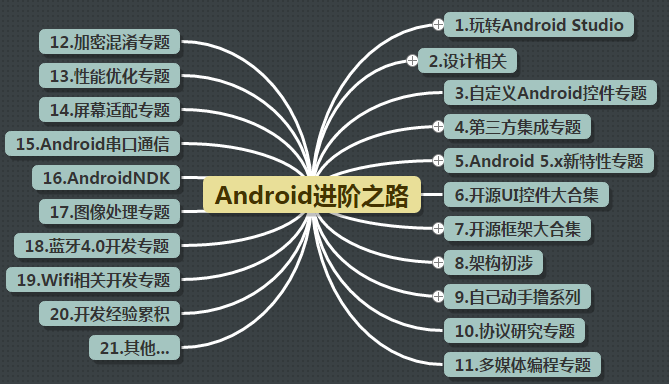
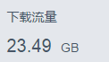

引言：
从六月底就开始编写这套教程，历时将近五个多月，今天终于写完了，全套教程正文部分148篇，
十大章，从基本UI控件到四大组件，Intent，Fragment，事件处理，数据存储，网络编程，绘图与动画，
多媒体，系统服务等都进行了详细的讲解！代码都是都是在Android Studio上进行编写的，全文
采用Markdown，行文结构清晰，还结合了实际开发中一些常见的问题进行了剖析...由于个人能力的局限，
虽然竭尽全力，但是难免还有有一些错误纰漏，望读者海涵指出，万分感激！在写这套教材的过程中，
感触良多，借着完结散花这最后一节一吐而快，也算是暂时告别自己博客生涯的一笔吧...
 一吐而快~
一吐而快~
1.此套教程的由来
记得那是在五月份的某一天晚上，刚和舍友打完撸啊撸，玩起手机来。不经意的我加了w3c鸟巢的 公众号，然后看了下推送过来的文章，感觉有点意思，于是乎就到度娘上搜了下"w3c鸟巢"。发现有 个菜鸟教程的栏目，然后里面的教程大部分都是Web类的基础教程，而我看到了移动端的教程，上面 有着"学习Android"！这样一个教程，作为一个搞Android的，按照故事情节，我肯定会马上 去点开这个链接，然后发生点什么事吧...然而，我并没有点...所以故事到这里就结束了，哈哈... 当然，最后还是点了，不过在这个期间和舍友下去喝了碗糖水而已~因为年代久远，但是教程里的内 容我都已忘记，但我现在还记得，在我的柜子底有一本《Android疯狂讲义》，大学买的第一本 编程书，哈哈，可惜看了100来页我已经放弃了，一本中文版的API文档哈...也就是因为这本书，才 会小猪Android入门之路的专栏，当时抱着试一试的心情，加了w3c大师姐的微信，然后问她需不需 要一个写Android基础教程的，接着把小猪入门之路的链接发给他了，然后大师姐貌似非常的高兴， 然后又问卖不卖版权之类的， 卖版权？那不是有钱收咩？ 作为一个苦逼学生狗，写点东西有钱收，想想还有点小激动呢，结果兴奋了一晚上，脑子里想了 很多...后来也不知道自己是怎么想的，就跟FK(w3c鸟巢的站长)聊了下， 然后就决定在w3c鸟巢的菜鸟教程上写一套Android的基础教程，免费，嗯，没错，不收一分钱， 前提是教程不用于商业用途，原因可能是被FK的分享的精神所渲染吧，也可能是自己真的想去写 一套Android教程吧，大部分大牛没时间或者不屑于去写基础入门教程，那么就让我这个渣渣来写 吧！为后面的初学者铺铺路也好嘛~
接下来就是用百度脑图来构思入门系列要讲解的内容，学了下Markdown语法，然后就开搞，一开始 是不想在coder-pig上写的，毕竟上面有很多太监了的教程。然后开了个小号，打算在上面写这套 新教程，但是访问量却惨不忍睹，假如你是一个写博客的，看到自己花了很多时间写出来的东西， 却没人看的时候，心里肯定不舒服是吧...后来还是默默地搬回了coder-pig上，然后把第一章写 完，也开始在w3c鸟巢上发布了！接着每天就开始下面这种一成不变的枯燥的生活： 每天上班，一有时间就构思今天写什么知识点，写个什么样有趣的例子，然后晚上5点半下班后， 去吃个饭，然后就回来埋头苦写，每天晚上基本上都是我锁门的，一般十点半左右走吧，记得 最晚一次写得太嗨没注意时间写到12点半，写完看了下时间，卧槽，十二点半！！！
吓得我赶忙收拾东西，拔腿就跑，因为园区这边好像是12点就关后门的，一到那里发现门是关 着的，心理顿时凉了一大半，妈蛋，难道今晚真的要睡公司么...后来走进一看才发现门是虚掩的， 并没锁，最后还是顺利地回到了宿舍...周六日一般也没什么节目，都是回公司码字，偶尔 天气好就去跟别人打打羽毛球，大部分时间还是花在码字上，就这样坚持了五个多月，这套教程 也总算完结了~
此刻的心情，有点小高兴，也有点小激动，但更多的却是一种解脱，总算写完了~~~ 为何是解脱，不急，还请听我娓娓道来...
2.扒一扒我的一些情况
不用到群里问猪神在那里高就，月薪多少，做我徒弟之类的话了，现在就扒一扒自己的一些情况吧！ 今年的应届毕业生(15届)，学校是北京理工大学珠海学院(北理珠)，目前在南方软件园这边工作，是 一枚Android实习生，月薪也只有3K，五险一金什么鬼都没有！嗯，你没看错，我是一名 3K实习生，或许你会觉得我在开玩笑，但这就是事实，因为自己大学时候的任性，我现在还有 两门科目没有过：高数上和下，所以还没拿到毕业证...很失望是吧，还以为写这套教材的是哪位 大牛，结果是一个实习生么，哈哈~
嗯，说下自己的当前的Android技术水平吧：
中下，或者说中下也达不到，可以单独完成小型的项目！但是架构什么的，屎一比，根本不考虑 复用之类的，可以说是任意拼凑起来的垃圾，很多新兴起的技术，听过但是没有花时间去研究...
接着说说自己的工作经历吧：
2015.2
学校春节招聘会，找的第一份实习，在拱北跨境工业区那边，一家外包公司，说是公司 还不如说是工作室，加起来就那么7个人，后来还跑了个HR。在这个公司呆了一个来月，收获就是： 学会了去看官方的API文档，而非啃李刚；学会了改Hosts；知道了Fragment的用法； 写了华仔天地(刘德华粉丝俱乐部APP)的UI；各种打杂； 他们有一套自己的东西，其实就是将一些常用到的功能丢到一个Jar包里，比如图像异步加载， 图片大小的动态计算等...要什么功能问后面的，没错，没文档...所有的APP都是那个套路， 可能外包公司都是这样吧，只在乎结果而不在乎过程，另外最让我接受不了的是测试， 叫我和美工在那里划屏，只要程序不crash就好了，这就叫测试... 于是乎，我离开了这家公司，此时我实习2.8k，转正3.2k！
2015.4
接着我又找了另一份工作，在清华科技园那边，这就不是一家外包公司了，他们主要是 做安防和智能家居类的，氛围还是不错的，偶尔会有技术问题的撕比，周五下午还有技术交流， 而且给我配了个新的电脑和显示器，感觉自己在这里呆肯定会很嗨皮！第一个月看看文档什么的， 看看要接手的项目什么的，小日子还是过得挺滋润的，可是好景不长，做了3年的那个老员工要走了！ 他手上的两个项目都丢给了我，而且我还要开始搞另一个新的项目，这没什么，勉勉强强还可以 扛下来，但是那两个接手的项目有个要改，而且要出版本，我连代码都还没来得及熟悉...怎么玩 得过来啊，自己做不过来，又不想耗时间，到时期限到了我什么都没搞出来，这样还拖累了别人! 记得想辞职前的那周过得非常的压抑，机缘巧合，好像是周三的下午吧，收到了现在公司HR打来 的电话，然后和现在的经理电话面试了下，问了一些Android基础的东西，聊得还蛮嗨的，然后约 个时间见见面，然后周五就过来面试了，再接着聊了一下现在公司的一些情况，第一感觉公司 环境还可以吧，位置都比较宽敞，然后跟他说了下我还没拿到毕业证的事，能不能转正， 可能是他当时口爽，说没什么跟人事那边说下就好...然而我在这里蹲半年了，还是实习... 然后周一回公司提交了辞职申请，然后离开了第二家公司，在这个公司的一个月，扩展了一下 自己的视野，知道了NDK和视频编解码这些东西~此时我试用3.8k，转正4.2k！
2015.5
嗯，辞去第二间公司的工作后，在学校嗨了一个星期，随手把自己的毕设给弄 完了，被迫分割成两个应用的毕设：海绵表表和一起啪啪啪，现在看来那两个自己写出来的东西， 无法直视，后来把毕设卖了，200块... 然后周一的时候就来到了现在的这家公司，又是接手项目，原来这里的那个Android开发的大牛 要跳到魅族去，第一次感觉到大牛的气息，假如他并没有走而是继续呆着多好呢？ 或许我此时又会是另外一种不同的结局了是吧~从SVN过渡到Git，从图形化界面过渡到命令行； 知道了注解，RxJava，okhttp，github，多渠道打包等等，愉快地相处了一周后，大牛走了， 接下来就是我自己看项目了，感觉就像来到一个新大陆一样，很多东西我以前都没见过， 就这样嗨了将近一个月，公司招到了另一名Android开发的，一开始听说是三年工作经验， 感觉有人带我飞了，然而事与愿违，在他身上我并没有感觉到一股大牛的气息，感觉可能是在 这个行业呆了三年吧，水平很一般，和自己比的话可能业务经验多一点吧，跟他讨论md他听都 没听过，Android Studio也不知道，其他的更不用说，记得有一次问他一个简单的控件怎么 自定义，他的回答是：网上找下改改就能用，我想问的是实现的思路，得到回答是：知道怎么用就好... 嗯，好吧！三年嘛，项目肯定是他来接手的啦，而经理丢给了我另外一个项目， 一个无人机上绑手机测量基站天线角度等信息，然后通过wifi显示到地面上的另一台手机上， 手机自身数据采集和数据传输到没什么，难点是串口通信(FTDI)的东西，手机 通过OTG线连单片机，完成指令收发，看着API文档撸了一个星期，连个最简单的Demo都写不出来 有发没收...同样的情况又持续了一个星期，好吧，写不出东西的感觉真的很不爽，后来没办法， 只能反编译别人的apk了，花了两天时间把别人apk里的代码抽取出最关键的部分，从6000多行 的代码变成500多行的代码，看到单片机上的收发信号灯闪烁，还蛮有成就感的！ 可惜好景不长经理说要加个实时视频播放的，我真是....这玩意我都没搞过，怎么玩，于是到 Github上找了，几个开源的视频直播项目，后来还是找了WifiCarema作为研究项目，然后因为 h264库编译的问题纠结了差不多两个月，结果还是没有解决，结果项目外包给了北京那边的人 做，嗯，我的第一个项目就这样阉割了...接着做了一个很简单的小东西，再接着就到现在 就是一直在跟踪解决websocket的问题了~我司推送并不是用的第三方，而是自己用socketio 搭建的一个推送平台，用socketio的原因是三个平台都可以用一套嘛，iOS，Android，还有 web端，然后出现了漏掉报文或者收不到位置更新的问题，到现在还没找到问题发生的原因， 连问题都重现不了，我们这边一直测都没问题，一到客户手里就各种问题... 现在还在纠结这个问题中...来这里半年了，还是实习生，实习工资3k，毕业证起码要明年六月份才能 拿到，应该没得转正了，唉..
嗯，上面就是我今年到现在的一些情况，前段时间去追梦网络面试，和面试官谈了谈自己 当前的一些情况，他说感觉我走了野路子，很多东西都走偏了，然后跟我说毕业这一年 很关键，以后成型了就难改了，然后又谈了一些架构的东西，嗯，第一次那么想进一家公司， 哪怕实习两个月也好，嗯，很遗憾，结果并没有拿到offer，不过也很感谢全齐大神给自己 上了一堂课，总算知道自己接下来要去学点什么~然后又面了两家，没什么感觉，不是自己 向往的类型，最后投了一波魅族实习生，哈哈，连面试的机会都没有，这是第一次，估计 HR连简历都没看到吧~ 以上就是我的一些个人情况的描述了，我真的是只有3K的实习狗，所以群里各位10k的 大老爷们，别逢年过节就叫我这个穷比发红包了...
3.一些自学心得以及资源分享
怎么学Android，这可能是初学者问得最多的问题了，通过上面你也知道了小猪有多屎， 所以下面这些都是鄙人对于自学的一些浅显的看法而已，不喜请喷~
1）看书
入门推荐的书：
- 《第一行代码》：这本就不用说啦，郭霖大神写的书，入门必备
- 《Android群英传》：这本是医生(徐宜生)写的，嘿嘿，双11买的，今天刚收到， 翻了下，感觉内容还是蛮简单，适合看完第一本书，或者会点Android的~
可能有的朋友会说，还有李刚Android疯狂讲义咧...嗯，买来当字典查也可以， 但是感觉看上面两本会让你更快入门，另外，在看第一行代码的时候，你也可以配合 着小猪写的基础入门教程一同服用，效果更佳~
进阶推荐的书：
也是接下来自己想入手的几本书：
《Android源码设计模式解析与实战》： 何红辉(Simple哥)，关爱民(爱哥)两人的大作，既可以学 习到设计模式，也可以体会到Android中蕴含的一些设计思想！
《Android开发艺术探索》：任玉刚，侧重于Android知识的体系化和系统工作机制的分析
- 《深入解析Android 5.0系统 》：剖析了最新Android 5.0 系统主要框架的原理和具体实现~
上述几本书我都还没摸过(还没入手)，都是广受好评的几本书~这里也推荐下!
2）看视频
网上关于Android的视频教程有很多，这里分享下基神力荐的黑马教程吧：
黑马28期Android全套视频无加密完整版：密码：h7jz
52期不加密版：密码：zve8
当然下面这些视频学习网站也很不错，也推荐下
3）看别人的技术博客
- CodeKK —— 专注于开源项目源码解析及优秀开源项目的分享
- Trinea —— 性能优化、源码解析
- 老罗的Android之旅 —— Android系统源代码分析
- 开发技术前线 —— 《Android源码设计模式》作者 Mr.Simple 维护的社区网站
- 爱哥 ——《Android源码设计模式》作者 关爱民
- 任玉刚 —— 《Android开发艺术探索》作者 CSDN博客
- 郭霖 —— 《第一行代码》作者 CSDN博客
- 鸿洋 —— CSDN 博客专家
- 胡凯 —— 专注性能优化
- 张明云 —— Android学习之路
- Drakeet —— 贝壳单词APP开发者
- 徐宜生 —— 《Android群英传》作者
- 代码家 —— 著名博主
- 脉脉不得语 —— 著名博主
- 高建武 —— 专注性能优化，简书著名博主
- 程序亦非猿—— 简书著名博主
- 廖祜秋liaohuqiu_秋百万 —— 淘宝职员
- hi大头鬼hi —— 对RxJava有较深的研究
- 阳春面 —— 简书著名博主
- 夏安明 —— CSDN 博客专家
- 兰亭风雨 —— CSDN 博客专家
- 赵凯强 —— CSDN 博客专家
- qinjuning —— CSDN 博客专家
- 工匠若水 —— CSDN 博客专家
- 张兴业 —— CSDN 博客专家
- Coder-pig —— CSDN 博客专家，最佳入门专栏
- Keegan小刚 —— 分享了多篇Android样式的文章
- 郑海波 —— CSDN博主，文章大多与自定义控件相关
- 吴小龙同学 —— 分享了多篇关于AndroidDesignSupportLibrary的文章
- 全速前行 —— CSDN 博客专家，主讲实战技巧和平常遇到的问题
4）高质量Android社区
- Stackoverflow —— 国外著名的问答社区
- V2ex —— V2ex Android板块
- Android 开发技术周报 —— 长期更新最新前言资讯
- 开发技术前线 —— 《Android源码设计模式》作者 Mr.Simple 维护的社区网站
- 泡在网上的日子 —— 大量第三方控件基地
- 开源中国 —— OsChina
- 23code —— android经典开源代码分享
- App开发者 —— 分享Android/IOS/Swift开发和互联网内容
- JavaApk.com —— 安卓demo聚集地，部分源码需购买VIP
- DevStore —— 各种Demo，以及第三方服务
5）官方学习网站/Wiki
6）代码/项目下载
嗯，大部分时间我都会选择到Github上面找，有很多开源的第三方，下面这个务必Star：
然后笔者也分享下以前在某宝花了50多块买的一些代码吧：
5000套Android源码 密码：6we6 3175套iOS源码 密码：53v9
上面的这套代码很多都是重复的，而且大部分都是基于Eclipse，涵括的还是比较广的，可以一下！
7）梯子工具
嗯，假如你不想经常改hosts或者不想买vpn，但是想用Google的话，那么你可以使用蓝灯(Lantern)~ 自己搜"Lantern"下载吧~
8）一些其他的碎碎念：
嗯，上面的资源大部分来自于：Android学习资源网站大全，请务必Star！！！后续如果 有什么新的资源都会在上面进行更新，也欢迎大家share自己的一些收藏，上面的内容是小猪 群里的第一大手——基神所写，当然还有B神和曹神，街神等，这里非常感谢各位一直以来对我的 一些指导以及帮助~
不知道你看到上面的资源是不是，收藏收藏，买买买，下下下~
我想说的是，收藏了不去看，只是一个Url而已；下载了不去看，只是一堆数据而已； 买了书不去看，也只是一沓纸！不要让你自己只是看起来很忙很努力的样子， 装比给谁看？学到手的东西才是自己的，很喜欢这样一句话： "技术之路最公平也最残酷的原因是：没有捷径，需要日积月累的积累，以及对技术持久的热情。" 还记得很久之前看的锤子科技的射角设计总监罗子雄仔tedx上演讲的： "如何成为一名优秀的设计师"说过的这么一段话： 格拉德威尔在《异类》一书中指出："人们眼中的天才，并非卓越非凡，而是付出了持续不断的努力， 一万小时的锤炼是任何人从平凡变成超凡的必要条件。"一万小时，也就是说你每天工作8小时的时间， 每周工作5天，你需要5年。你无需天才，无需智商过人，无需三头六臂，无需头上长角，你只需要持 续的、坚持的努力，有正确的方法，就能够在设计领域，一个专业中独当一面。 尽管他讲的是设计，但是很多东西都是相通的，嘿嘿，无情地上了一大碗鸡汤~ 总结下自学，无非： 多看书，看博客，做项目，看源码，不断的总结反思，让自己所学的东西所学的东西结构化！
4）一些答疑
下面是一些读者经常问到的问题，下面统一答复下：
1.我是以前学XX的或者我不是搞编程的，我想来学Android，能学好不？之类的问题！ 答：前段时间在医生(徐宜生)的新浪微博看到，一位65岁的大爷，到他的公司向他请问 Android Studio，看到这里，你觉得上面的问题是问题吗？
2.XXX报错了？怎么办之类的问题 答：这种最频繁，其实很多都可以在度娘或者谷哥上找到答案，这么多人搞Android难道就 你一个人出现过这样的问题吗？或者到Stackoverflow上提问等，先自己搜过思考过，再去 问别人！！！而且别人也没有回答你的义务，别搞得好像别人不回答你的问题就很什么， 然后就恶言相向！注意问问题的技巧，整理语言，发log，出错位置代码等！
3.想加小猪做好友，为什么我拒绝了？ 答：不知道你在哪看到了我的QQ，然后看了我写的东西，就迫切的想加我为好友， 我想问，加了，然后呢？问问题更方便了？刚开始加我的我都会加，一般都是问问题， 我每次都会很耐心的解答，然后就开始依赖我了，一出问题就找我...一个两个没什么， 慢慢地人越来越多，我每天的时间都基本用在回答问题上了，结果自己一天下来什么都没做成... 不是说小猪高冷或者看不起初学者之类的，我也有自己的事要做，希望各位可以体谅下！ 有问题，可以到群里问，管理们都是很热心的，当然，前提是你的问题别一百度就可以 找到的...别做伸手党！！！
4.基础入门教程写完，那么什么时候开始写进阶教程？ 答：大家对基础入门教程的反馈都觉得写的不错，也受到了很多的好评，表扬，很感谢~ 至于进阶教程，在写基础入门的过程中就曾经简单的构思过，用百度脑图列了下大纲：

当时想着写完入门休息一个月，然后就开始写进阶系列的，大概一个月一个专题这样。 不过，进阶部分可能不会继续写，可能你会不解，为什么不写呢？坦白说下自己的一些难处吧：
首先是：花在写教程上的时间，一篇简单的教程至少需要花费我2个多小时的时间，尽管内容 比较简单，而复杂一点的，我可能需要花上2，3天！写教程不同于写笔记，要描述清晰， 写例子，贴运行效果等，笔记自己看懂就好，而教程你要让别人也看懂...
接着是：自己的进步缓慢，写完这套基本教程，和写之前的我相比，并没有什么进步； 依旧还是以前的水平...每次去面试来来去去都是说那几个破旧的项目，一点意思都没有， 我想花点时间做点什么~想学的东西有太多太多，比如，从5月份我就开始接触rxjava，然后 现在烂大街了，我还只会最简单的玩法~ 最后是：写教程不会给我带来任何的收入，上面也说了，我是一个3K实习狗，而写这套 教程是没有任何收入的，而且每个月偶尔还要给几块钱给七牛，因为图都是用的七牛的 图床，万恶的爬虫网站，把我的文章都爬过去了，然后还不注明出处，然后拼命下我的图... 这是10月份到11月份的下载流量！ 
我不是富二代，记得之前也说过，我爸得了抑郁症，没工作能力的事，我妈在老家陪我爸， 也就是没收入来源，所幸的是我爸没事熬过来了，而且我已经不用每年再去支付2W的学费； 尽管每月3k的工资可以维持我的生活，但是作为家里的长子，总得扛起家里的大梁吧！ 毕竟还有在读大学的弟弟和妹妹，假如我能有毕业证，现在的情况可能好一点吧！ 算了，过去的事就过去了，更重要的是以后！我也想每天闲着研究新东西，然后写写 教程啊，但是理想总是很美好的，但现实往往很残酷，我也要生活。 另外说到博客专家这个衔头，很多朋友喜欢拿我这个来黑我，其实并没有什么大用， 每个月原创超过10篇就能收到一本书而已，大部分是C币商城里的一些旧书...
5.小猪接下来的想做点什么？ 答：来一次说走就走的旅行，嗨一个月，然后等过年！ 好吧，我也想，可惜兜里没钱，接下来的日子嘛，想把公司的项目琢磨透，修下bug，然后学一些 其他的东西，接着写点小玩意玩玩，存钱买个机械键盘(ikbc G104)，复习下高数准备一月份 补考等等，然后过完年，可能跑深圳那边找找机会吧~可能偶尔会更新那么一两篇文章吧， 不过不要期望太大，进阶系列也不是说不写，只是暂时不会写，等找到一份稳定的工作，有了 一定经济能力，再开始写吧~
致谢：
嗯，好吧，唠唠叨叨地终于把自己肚子里的东西都吐出来了~
按照一般的套路，肯定要说一堆，谢谢ccav之类的吧，嗯！ 谢谢w3c鸟巢的站长FK对每篇文章的认真排版，以及小猪秘密基地里的基神，B神，街神，曹神等的 技术支持，还有一直默默支持小猪的各位朋友，在这里真挚的说一声感谢~ 好了，就说这么多吧，谨以此文纪念我将近两年的csdn博客生涯吧~
完结散花~ 是终点也是起点
to be continued... 待续